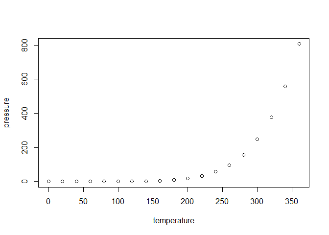

knitr::opts_chunk$set(
collapse = TRUE,
comment = "#>",
fig.path = "man/figures/README-",
out.width = "100%"
)The goal of startbox is to manage and visualize experimental data in plant protection trials.
This R package was developped as part of the STAR project 2024-2027 (France), with the support of the French Ministry of Agriculture and Food, and the financial contribution of the special allocation account for agricultural and rural development (CASDAR). The responsability of the French Ministry of Agriculture and Food cannot be engaged.
Installation
You can install the development version of startbox from GitHub with:
#install.packages("devtools") # if not already installed
devtools::install_github("vignevin/startbox")If you also want to install the vignette (which serves as a tutorial for the package), run this after installation:
devtools::install(build_vignettes = TRUE)Once installed, you can access the vignette with:
vignette("startbox")
#> démarrage du serveur d'aide httpd ... finiExample
This is a basic example which shows you how to solve a common problem:
#library(startbox)
## basic example codeWhat is special about using README.Rmd instead of just README.md? You can include R chunks like so:
summary(cars)
#> speed dist
#> Min. : 4.0 Min. : 2.00
#> 1st Qu.:12.0 1st Qu.: 26.00
#> Median :15.0 Median : 36.00
#> Mean :15.4 Mean : 42.98
#> 3rd Qu.:19.0 3rd Qu.: 56.00
#> Max. :25.0 Max. :120.00You’ll still need to render README.Rmd regularly, to keep README.md up-to-date. devtools::build_readme() is handy for this.
You can also embed plots, for example:

In that case, don’t forget to commit and push the resulting figure files, so they display on GitHub and CRAN.